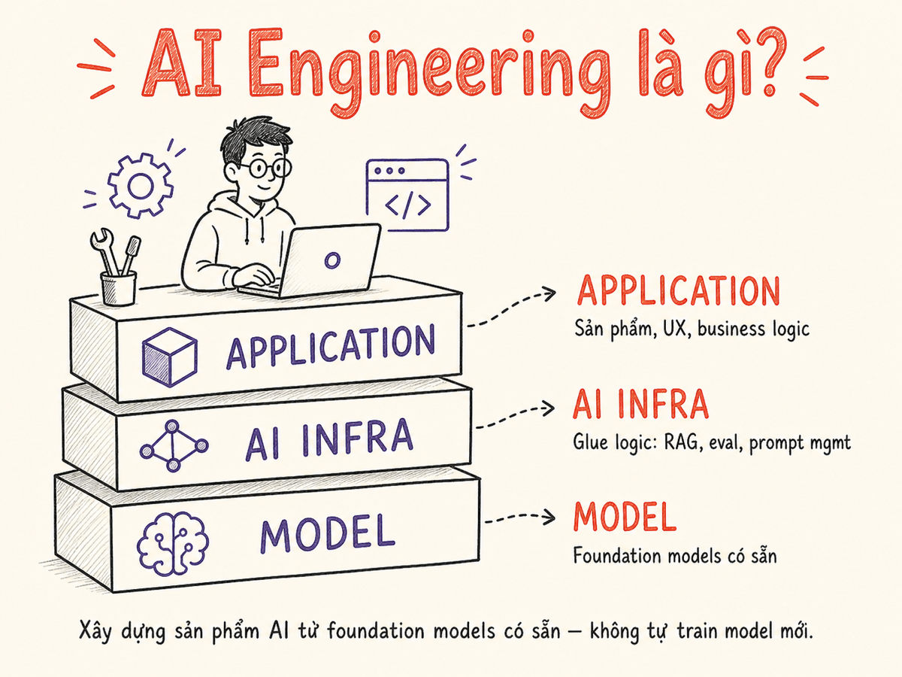

AI Engineering là gì?
Hiểu vai trò AI Engineer, phân biệt với ML/Data Science/MLOps, và 3 layer của stack hiện đại.

1.1 Định nghĩa
AI Engineering là ngành xây dựng các ứng dụng/sản phẩm sử dụng AI models (đặc biệt là foundation models) để giải quyết bài toán thực tế. Trọng tâm không phải là tạo ra model mới, mà là làm cho model có sẵn hoạt động hiệu quả trong production.
AI Engineering = Foundation Models + Software Engineering + Domain Knowledge
1.2 Phân biệt với các vai trò liên quan
| Vai trò | Trọng tâm | Output điển hình |
|---|---|---|
| ML Researcher | Tạo ra model/thuật toán mới | Paper, model weights |
| ML Engineer | Train/deploy custom ML models | Training pipeline, serving infra |
| Data Scientist | Phân tích dữ liệu, xây dựng insight | Notebook, dashboard, model nhỏ |
| MLOps Engineer | Infra cho ML lifecycle | CI/CD, monitoring, model registry |
| AI Engineer | Ứng dụng foundation models vào sản phẩm | LLM app, agent, RAG system |
| Agent Engineer | Thiết kế hệ thống multi-agent, tool-calling, memory | Agent loop, orchestration pipeline |
| AI Evals Engineer | Xây dựng eval harness, đo chất lượng model/app | Eval suite, benchmark, scoring pipeline |
| Software Engineer | Code, ship features | Web/mobile/backend services |
Điểm khác biệt cốt lõi của AI Engineer
- Không train model từ đầu — dùng model có sẵn (API hoặc open-source)
- Phải xử lý non-determinism (cùng input có thể ra output khác)
- Đánh giá chất lượng bằng evals, không chỉ unit tests
- Phải nghĩ về prompt, context, tool, memory thay vì chỉ data/feature
- Ngày càng phải làm chủ agentic workflows: agent loop, tool calling, multi-agent orchestration — kỹ năng được yêu cầu nhiều nhất trong JD 2025–2026
1.3 Tại sao ngành này tồn tại — và tại sao là bây giờ
Muốn dùng AI thì phải train model riêng → cần ML team, GPU farm, dataset có nhãn lớn. Mỗi task = một model riêng: sentiment, NER, summarization, translation đều là dự án độc lập.
→ Rào cản vào ngành AI rất cao
GPT-3 và ChatGPT khai sinh kỷ nguyên foundation models — một mô hình làm được rất nhiều task chỉ qua prompt. Rào cản giảm mạnh: software engineer có thể build AI product mà không cần PhD ML.
→ Sinh ra vai trò "AI Engineer"
Model ngày càng mạnh (reasoning, multimodal, long context, agentic). Stack quanh model trưởng thành: vector DB, observability, eval framework, prompt management. AI Engineering trở thành một discipline độc lập, có lộ trình rõ ràng. Các chuyên môn con bắt đầu tách ra: Agent Engineer (xây hệ thống tự động đa bước) và AI Evals Engineer (đo lường, đánh giá chất lượng hệ thống AI) nổi lên như hai nhánh riêng vào 2025–2026.
→ Có ecosystem & best practices; ngành phân nhánh chuyên môn
1.4 Ba layer của AI Engineer stack
AI Engineer thường làm việc nhiều ở layer 1 và 2, hiểu đủ về layer 3 để chọn đúng model và biết giới hạn của nó.
Khi gặp một bài toán AI, hỏi: cái gì thuộc model (giải quyết bằng prompt/fine-tune), cái gì thuộc infra (cache, retrieve, route), cái gì thuộc app (UX, business rule)? Phân tách rõ giúp tránh "nhồi mọi thứ vào prompt".
Tóm tắt
- AI Engineering = dùng foundation models để build sản phẩm, không phải tạo ra model mới.
- Khác ML Engineering ở chỗ: trọng tâm prompt/context/tool/memory thay vì data/feature/training.
- Stack 3 layer: Application — AI Infrastructure — Model. AI Engineer chủ yếu ở layer 1 và 2.
- Phải xử lý non-determinism → evaluation và observability quan trọng từ ngày đầu.